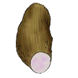

Lesson 20: Letter Y
Lesson 20
Letter Y

Draw the following pattern in your exercise book.

This spatial activity also requires a teacher-provided real object, tactile graphic, or raised-line resource. The text response does not replace tactile practice.
Trace the letter Y in your exercise book.
This spatial activity also requires a teacher-provided real object, tactile graphic, or raised-line resource. The text response does not replace tactile practice.
Copy uppercase Y in your exercise book.
No additional tactile resource is required for this language response.
Copy uppercase Y with lowercase y.
No additional tactile resource is required for this language response.
Copy the following words in your exercise book.
No additional tactile resource is required for this language response.
No additional tactile resource is required for this language response.
No additional tactile resource is required for this language response.
No additional tactile resource is required for this language response.